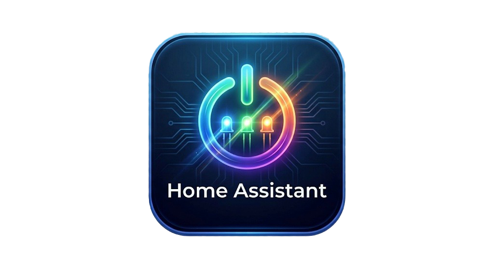

Android
Téléphone et tablette
Installez le fichier APK sur votre appareil Android. L’installation peut demander l’autorisation des applications provenant de cette source.
Télécharger l’APKVérification de la dernière version…

Home Assistant Retour à l’applicationApplications officielles
Choisissez votre plateforme. Les fichiers sont distribués depuis les publications officielles du projet sur GitHub.
Android
Installez le fichier APK sur votre appareil Android. L’installation peut demander l’autorisation des applications provenant de cette source.
Télécharger l’APKVérification de la dernière version…
Windows
Téléchargez l’installateur, ouvrez-le et suivez les étapes affichées. Windows peut avertir que l’éditeur n’est pas vérifié.
Télécharger l’installateurVérification de la dernière version…
Les mises à jour sont publiées sur GitHub. Sur Android, installez le nouvel APK par-dessus l’application existante pour la mettre à jour.
Voir toutes les versions sur GitHub